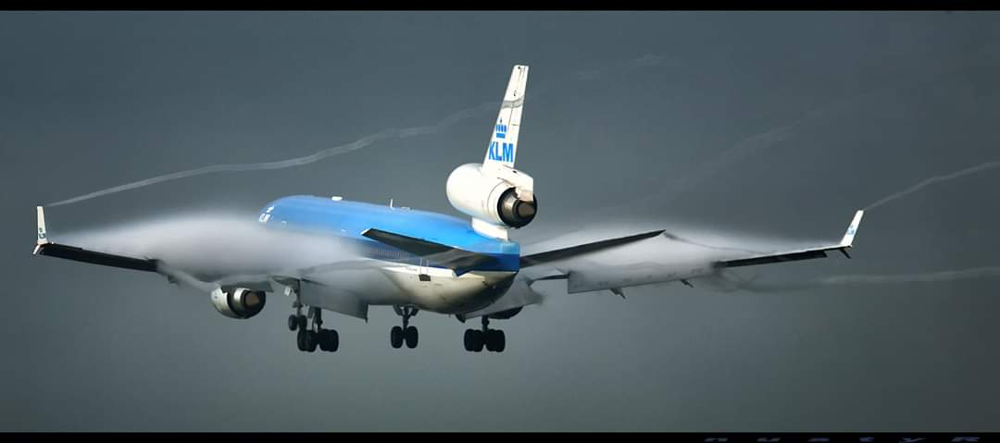

De MD-11 is een driemotorig straalvliegtuig van McDonnell Douglas. Het was de opvolger van de DC-10, en was iets langer en had een groter vliegbereik. Er werden 200 toestellen gebouwd tussen 1990 en 2000, waarna het door de fusie met Boeing uit productie werd genomen.
